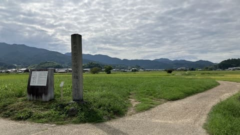
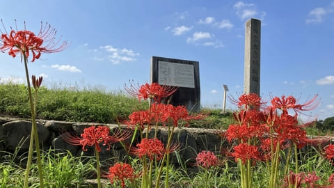

日本最大級の古代寺院
天武天皇の時代に造営された国家寺院で、飛鳥時代の仏教文化の中心となった場所です。

大官大寺跡は、飛鳥時代に建立された国家寺院で、飛鳥四大寺のひとつに数えられる古代寺院跡です。 天武天皇の時代に整備され、当時は日本最大級の規模を誇った寺院でした。 現在は田園の中に礎石などが残り、飛鳥時代の壮大な寺院の姿を想像できる歴史スポットです。
| 見学時間 | 自由見学 |
|---|---|
| 定休日 | なし |
| 料金 | 無料 |
| 所要時間 | 10〜20分 |
| 駐車場 |
甘樫丘第2駐車場
（徒歩20分・普通車500円）
豊浦駐車場 （徒歩25分・普通車500円） |
| アクセス |
近鉄橿原神宮前駅から徒歩35分。 奈良交通明日香周遊バス「豊浦」周辺から徒歩25分。 |
| 地図 | 地図はこちら |

天武天皇の時代に造営された国家寺院で、飛鳥時代の仏教文化の中心となった場所です。
大官大寺は、天武天皇によって整備された国家的な寺院です。 当時は巨大な塔や金堂を備えた大規模な寺院でしたが、平城京への遷都に伴い移転し、後の大安寺へとつながりました。 現在の跡地では発掘調査によって、飛鳥時代の寺院配置や規模が明らかになっています。